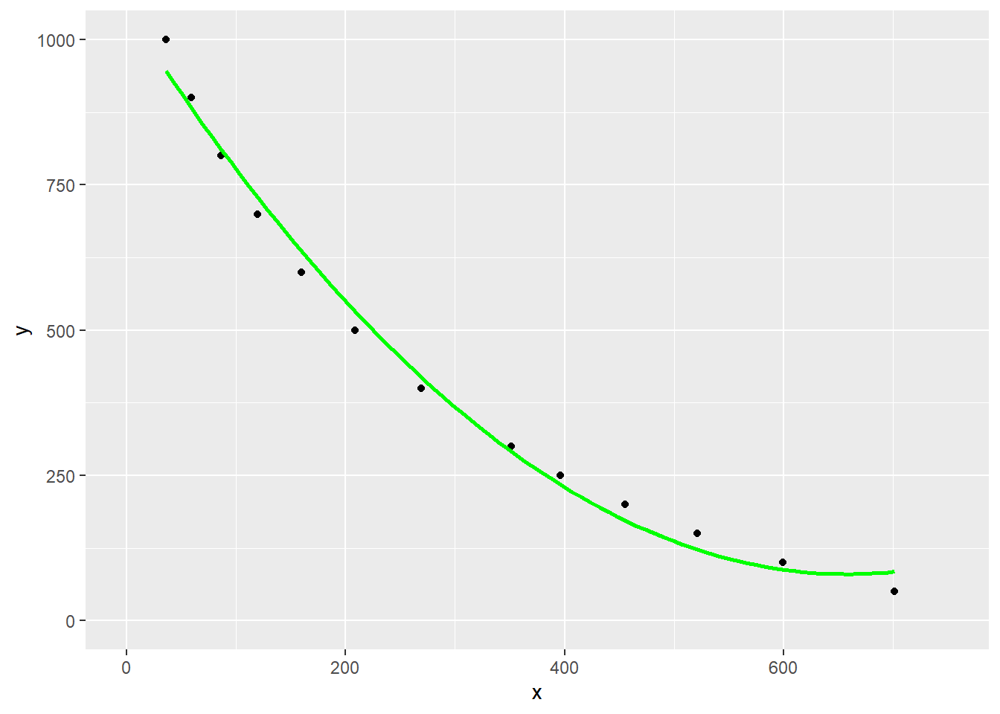
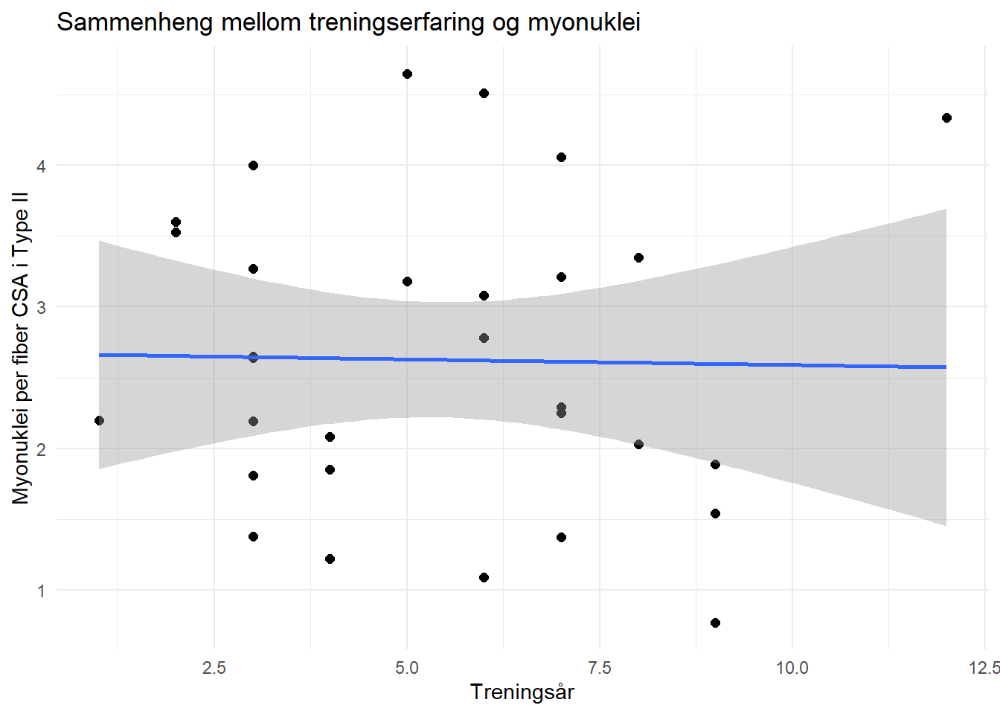

2 Assignment 2: Regression models, predicting from data
3 Assignment 2: Regression models, predicting from data
3.1 Overordnet for rapporten
Denne oppgaven er delt inn tre separate deler som tar for seg konsepter innenfor analyse av data og regresjon. I del 1 kalkulerer vi laktat terskler, og ser nærmere på reliabiliteten mellom to ulike terskelnivåer. Del 2 bruker vi molekylær data til å predikere størrelsen på DNA-fragment ved hjelp av en veileder. I del 3 skal vi se nærmere på om det finnes en lineær sammenheng mellom to valgte variabler fra datasettet hypertrophyi datapakken exscidata. Hver del vil ha sin egen introduksjon, metode, resultatdel og diskusjon.
All R-kode som er brukt i denne deloppgaven, er samlet og plassert helt til slutt i teksten, like før neste deloppgave.
3.2 Del 1: Laktat terskler
3.2.1 Introduksjon
Laktatterskel (LT) er en sentral variabel innen treningsfysiologi, spesielt i utholdenhetsidretter, hvor den brukes til å forutsi prestasjon, styre intensiteten av treningsøkter og evaluere effekten av trening (machado2012?; Poole et al. 2021). LT representerer den arbeidsintensiteten hvor produksjonen av laktat i blodet overstiger kroppens evne til å fjerne det, noe som fører til en akkumulering av laktat i blodet (Poole et al. (2021), s.738). Dette markerer overgangen fra en stabil til en progressivt økende metabolsk belastning.
Det finnes mange ulike metoder for å bestemme LT, og en av de mest brukte er å måle intensitetene ved faste blodlaktatnivåer, som 2 og 4 mmol/L, ved hjelp av regresjonsmodeller som predikerer intensiteten ved disse verdiene (Kindermann, Simon, and Keul (1979); Tanner and Gore (2012)). Andre tilnærminger, som “maximal-deviation method” (Dmax), beskrevet av Machado et al. (2012), tilbyr analyser som kan bedre reflektere de underliggende metabolske mekanismene som er bestemmende for prestasjon (machado2012?).
For å evaluere påliteligheten av disse målmetodene, er det viktig å vurdere testens reliabilitet. Dette kan kvantifiseres gjennom variasjon innen samme person, også kjent som “typical error”, på norsk typisk feil (Hopkins (2000), s.2). Typisk feil forteller noe om den forventede variasjonen mellom målinger på samme individ og kan uttrykkes som en prosentandel av gjennomsnittsverdien, kjent som koeffisienten av variasjon (CV) (Hopkins (2000), 3). CV er dimmensjonsløs og åpner opp for muligheten å sammenligne reliabiliteten mellom personer med ulik prestasjonsevne, og er derfor et relevant mål i denne rapporten.
Laktatterskelen er en viktig fysiologisk parameter for å forstå sammenhengen mellom treningsintensitet og metabolsk respons. Selv om det finnes flere metoder for å beregne laktatterskel, er det vanlig å bruke faste blodlaktatnivåer som referansepunkter, som 2 mmol/L og 4 mmol/L, for å forutsi treningsintensitet (tanner2012?, kap. 6). Formålet med denne deloppgave er å sammenligne reliabiliteten til disse tersklene, målt som typisk feil i prosent av gjennomsnittet.
På grunn av begrenset datainnsamling fra vårt reliabilitetsforsøk, benyttes datasettet fra cyclingstudy som grunnlag for analysen. Dette gir mulighet til å beregne og evaluere reliabiliteten av de to tersklene og utforske deres egnethet i praksis.
3.2.2 Metode
For å ha laktatterskler til å undersøke, ble det benyttet et åpent datasett cyclingstudy, som inneholdt en rekke fysiologiske variabler fra en sykkelstudie (Sylta et al. (2016)). Fra dette datasettet ble det hentet ut informasjon om treningsintensitet, målt i watt, og blodlaktatkonsentrasjoner. Ved hjelp av lineære og polynomiske modeller ble det beregnet to laktatterskler, 2 mmol/L og 4 mmol/L, for å evaluere forholdet mellom treningsintensitet og laktatakkumulering. Prediksjoner fra hver modell ble brukt til å identifisere wattverdier nærmest tersklene 2 mmol/L og 4 mmol/L. Den tredjegradspolynomiske modellen ble valgt for å illustrere resultater i detalj.
Data ble filtrert for en deltaker (subject = 10) ved et bestemt tidspunkt i studien (pre). Laktatkonsentrasjoner mellom 225 og 375 watt ble omformet til et langt format for enkel visualisering og analyse. Laktatnivåene ble analysert for å finne treningsintensiteter nærmest tersklene 2 mmol/L og 4 mmol/L.
Restverdiene (residuals) fra hver modell ble beregnet for å vurdere hvor godt modellene beskrev dataene. Disse restverdiene ble visualisert i Figure 3.2 for å illustrere modellenes avvik fra de observerte verdiene ved ulike treningsintensiteter. Viderre ble de ulike modellene, inkludert lineær, andre-, tredje- og fjerdegradspolynomiske tilpasninger, brukt for å sammenligne hvordan hver modelle beskriver sammenhengen mellom watt og blodlaktatkonsentrasjon, grafisk fremstilt i Figure 3.1.
Reliabilitet til tersklene ble analysert ved å beregne typisk feil \(TE = \frac{SD_{\text{diff}}}{\sqrt{2}}\), som prosentandel av gjennomsnittsverdien, altså koeffisienten av variasjon (CV) \(CV (\%) = \frac{\text{Typical Error}}{\text{Mean}}\times 100\).
All datahåndtering, analyse og grafisk fremstilling ble utført i R (versjon 4.1.1).
3.2.3 Resultat
Figure 3.1 viser sammenhengen mellom treningsintensitet (watt) og blodlaktatkonsentrasjon, sammen med tilpasninger basert på ulike modeller. De observerte dataene er koblet med rette linjer, her synlig som stiplet linje, som interpolerer mellom puntkene. Tersklene 2 mmol/L (gul) og 4 mmol/L (rød) er markert med horisontale linjer, mens de vertikale linjene (blå og grønn) markerer hvor tersklene møter den stiplete linjen på x-aksen, basert på visuell estimering.
De ulike modellene ble sammenlignet med hensyn til hvordan de beskriver dataene, og evaluert ved restverdier (Figure 3.2). Samlet sett gir de tredje- og fjerdegradspolynomiske modellene de beste tilpasningene, særlig nær tersklene ved 2 mmol/L og 4 mmol/L, mens den lineære modellen viser større avvik ved høyere wattverdier. Andregradspolynomiske modellen ligger mellom disse to ytterpuntkene.

Table 3.1 og Table 3.2 viser estimerte watt verdier ved laktattersklene 2mmol/L og 4 mmol/L, basert på de ulike modellene. Gjennomsnittet av intensitetene for hver terskel er også inkludert. Disse predikasjonene ble beregnet ved interpolasjon mellom de observerte datapunktene for blodlaktatkonsentrasjon.
| Laktatterskel ved 2 mmol/L | |
|---|---|
| Treningsintensitet per modell og gjennomsnitt | |
| Modell | Treningsintensitet (Watt) |
| m1 | 287.7 |
| m2 | 306.5 |
| m3 | 311.0 |
| m4 | 311.1 |
| Gjennomsnitt | 304.1 |
| Tabellen viser modellene og gjennomsnittet for terskelen ved 2 mmol/L. | |
| Laktatterskel ved 4 mmol/L | |
|---|---|
| Treningsintensitet per modell og gjennomsnitt | |
| Modell | Treningsintensitet (Watt) |
| m1 | 350.0 |
| m2 | 342.8 |
| m3 | 343.0 |
| m4 | 343.7 |
| Gjennomsnitt | 344.9 |
| Tabellen viser modellene og gjennomsnittet for terskelen ved 4 mmol/L. | |
Estimatene variere noe mellom modellene for begge terskler. For 2 mmol/L varierer de fra 287.7 W (lineær modell) til 311.1 W (fjerdegradspolynomisk), mens snittet ble på 304.1 W. For 4 mmol/L varierte de fra 342.8 W (andregradspolynomisk modell) til 350 W (lineær modell), med et snitt på 344.9 W. Dette illustrerer hvordan valg av modell, spesielt ved høyere intensiteter kan påvirke predikasjonene.
Under i Table 3.3, presenteres mål på reliabilitet ved tersklene 2 mmol/L og 4 mmol/L. Ved terskel 2 mmol/L har trenigsintensiteten en høyere typisk feil (7.87 W) og koeffisient av variasjon (2.59%) sammenlignet med terskel ved 4 mool/L, hvor typisk feil og CV% er henholdsvis 2.43 W og 0.70%. Man kan derfor antyde at reliabiliteten er bedre ved høyere terskler (4 mmol/L) enn ved lavere terskler (2 mmol/L).
| Reliabilitet ved ulike terskler | ||||
|---|---|---|---|---|
| Typisk feil og koeffisient av variasjon | ||||
| Terskel (mmol/L) | Gjennomsnitt (Watt) | SD Diff (Watt) | Typisk Feil (Watt) | CV (%) |
| 2 mmol/L | 304.07 | 11.13 | 7.87 | 2.59 |
| 4 mmol/L | 344.88 | 3.44 | 2.43 | 0.70 |
| Tabellen viser beregnet reliabilitet ved tersklene 2 mmol/L og 4 mmol/L. | ||||
3.3 Del 2: Forutsi størrelser på DNA fragmenter eller stiningene i en qPCR-kalibreringskurve
3.3.1 Introduksjon
Sportslige prestasjoner påvirkes av både miljømessige og genetiske faktorer (Tucker and Collins (2012)). Et viktig gen i denne sammenhengen er ACTN3. som koder for proteinet alpha-actinin-3. Dette proteinet finnes nesten utelukkende i hurtige muskelfibre og er kjent for sine rolle i kraftbaserte aktiviteter som sprint og vektløfting (Mikami et al. (2014); North and Beggs (1996); Schadock et al. (2015)). Mutasjoner i genet kan føre til en ikke-funksjonell variant, kjent som R577X-polymorfismen, som resulterer i manglende produksjon av proteinet (North et al. (1999)). Genotyper som inneholder R allelet, er assosiert med bedre ytelse i kraftfulle og eksplosive idretter, mens X-allelet kan være gunstig for utholdenhet (Mikami et al. (2014); Yang et al. (2003), s.629-630).
For å analysere genotypene til ACTN3-genet, vil molekylære teknikker som PCR (polymerasekjedereaksjon) og elektroforese være nyttig. PCR muliggjør spesifikk amplifisering av DNA-sekvenser, slik at man kan identifisere genetiske variasjoner (Schadock et al. (2015)). Elekttroforese i agarosegel brukes deretter til å separere DNA-fragmentene basert på størrelse, noe som vil gi en visuell representasjon av genotypene (Schadock et al. (2015)).
I denne delen av oppgaven ble ACTN3-genet undersøkt gjennom DNA-analyse, som ble gjennomført som en del av et forsøk på molekylærelaboratoriet. Ved hjelp av PCR og elektroforse forsøkte man å separere og analyser fragmentstørrelsene til ACTN3-genet for å kartlegge genotypen i de ulike prøvene, for å innsikt i genetiske bidrag til fysisk ytelse og idrettsprestasjoner.
3.3.2 Metode
3.3.2.1 DNA-ekstraksjon
DNA ble ekstrahert fra blodprøver samlet i prøverør med EDTA (etylendiamintetraeddiksyre) ved hjelp av en modifisert protokoll basert på Bartlett og Stirling (Bartlett and Stirling (2003), kap 6). Etter overføringen av 3 mL blod til et 15 mL rør, ble cellene lysert med Reagens A og sentrifugert (3000 g i 5 min) for å isolere en cellepellet. Pelleten ble resuspendert i Reagens B, og DNA ble frigjort ved tilsetning av natriumperklorat (250 μl av 5 M sodium perchlorate) og inkubasjon ved 65 °C. Etter avkjøling i romtemperatur, ble iskald kloroform (2 mL) tilsatt for å skille DNA fra andre cellekomponenter, og mikset i en roterende misker i mellom 30 til 60 min. Etterpå ble den sentrifugert etterfulgt av sentrifugering (2400 g i 2 min) for å hente ut den øvre delen av prøven. DNA ble uthentet med kald 100% etanol (2-3 mL), tørket og resuspendert i TE-buffer (200 ul). Konsentrasjonen ble målt med et spektrofotometer, og verdiene låg rundt 200 og 500 ng/ul.
3.3.2.2 Bestemmelse av ACTN3-genotypen
ACTN3-genotypen ble bestemt ved bruk av en fire-primer PCR-protokoll tilpasset fra Schadock et al. (2015) (Schadock et al. (2015)). PCR-reaksjonen ble satt opp i et totalvolum på 20 µL, bestående av 10 µL 2X master mix, 5 µL primermiks (inneholdt hsACTN3_F1, hsACTN3_R1, hsACTN3Tif_F2, og hsACTN3Cir_R2) og 5 µL DNA-prøve (se over). PCR-syklusen inkluderte initial denaturering ved 95 °C i 2 minutter, etterfulgt av 35 sykluser med 95 °C i 10 sekunder, og 72 °C i 45 sekunder, og til slutt ved 72 °C i 2 minutter.
3.3.2.3 Elektroforese for analyse av PCR-produkter
PCR-produktene ble analysert ved hjelp av agarosegelektroforese i en 2 % agrosegel. Gelen ble fremstilt ved å løse 2 g agarose i 100 mL 1X TBE-buffer, med tilsetning av 10 µL Sybr Safe for visualisering av DNA. Løsningen ble oppvarmet til klarhet, avkjølt til cirka 60 grader, og deretter helt i en støpeform med gelkammer. Etter cirka 1 time hadde gelet blitt fast, og ble plassert i en horisontal elektroforeseenhet fylt med 1X TBE-buffer
DNA-prøvene ble blandet med 6X farge (1 µL per 5 µL DNA-prøve), og 2-5 µL av hver prøve ble lastet i egne brønner sammen med en DNA-stige som referanse. Eletroforesen ble utført ved 150 V i cirka 1 time, inntil fargeindikatoren hadde vandret rundt 80% av gelens lengde. Gelen med prøvene ble visualisert i en G ved bruk av UV-lys og Sybr Green-instillinger.
3.3.2.4 Analyse av PCR-produkter med Iamge J og R
For å bestemme størrelsen på PCR-produktene ble bildeanalyse utført med IamgeJ Fiji. Gelbildet ble invertert, rotert og trimmet for å isolere prøvene og DNA-stigen. Ved bruk av rektangelverktøyet ble stigen og prøvene markert, og toppunktene i intensitetsgrafene ble registret. Disse punktene representerte DNA-fragmentenees migrasjonsavstand, og dataene ble eksportert til Excel for videre analyse.
I R ble en kalibreringskurve laget basert på DNA-stigen (Figure 3.3), hvor logaritmen av molekylvekten ble plottet mot migrasjonsavstanden. Kalibrering ble utført ved hjelp av en polynommodell for å sikre høy presisjon. Denne modellen ble deretter brukt til å estimere molekylstørrelsen for de ukjente prøvene. Modellen ble vurdert basert på \(R^2\)-verdien fra lineær regresjon, og verdien lå nær 1, noe som indikerte høy modellpresisjon. Den justerte modellen ble deretter brukt til å estimere molekylstørrelsene for de ukjente prøvene, som ble beregnet på migrasjonsavstandene fra gelelektroforesen.

Code
# Fit the model
cal <- lm(log(mw) ~ dist, data = ladder)
# Check model performance, R^2 should be ~ 1.
summary(cal)
Call:
lm(formula = log(mw) ~ dist, data = ladder)
Residuals:
Min 1Q Median 3Q Max
-0.244363 -0.040218 -0.004565 0.082943 0.112630
Coefficients:
Estimate Std. Error t value Pr(>|t|)
(Intercept) 7.0915695 0.0480419 147.61 < 2e-16 ***
dist -0.0041842 0.0001298 -32.23 3.06e-12 ***
---
Signif. codes: 0 '***' 0.001 '**' 0.01 '*' 0.05 '.' 0.1 ' ' 1
Residual standard error: 0.09807 on 11 degrees of freedom
Multiple R-squared: 0.9895, Adjusted R-squared: 0.9886
F-statistic: 1039 on 1 and 11 DF, p-value: 3.059e-12Code
# Estimate molecular weights from migration distances
preds <- exp(predict(cal, newdata = unknown)) 3.3.3 Resultater
Analyse av PCR-produktene viste at DNA-fragmentet i brønn 1 (prøve 1) hadde en estimert båndstørrelse på 407 bp, mens brønn 2 (prøve 2) viste et fragment på 401 bp. I brønn 3 (prøve 3) ble det identifisert to fragmenter, med størrelser på henholdsvis 396 bp og 296 (Table 3.4). Disse resultatene ble beregnet basert på kalibreringskurven som ble laget ved hjelp av DNA-stigen, og fragmentstørrelsene reflekterer migrasjonsmønsteret observert i gelanalysen.
| Resultater fra PCR-analyse | |
|---|---|
| Brønn | Båndstørrelse (bp) |
| 1 | 407 |
| 2 | 401 |
| 3 | 396, 296 |
3.3.4 Diskusjon
Denne analysen viste at ingen av DNA-fragmentene hadde nøyaktig den forventede størrelsen på 413 bp (R/R) eller 318 bp (X/X) (Schadock et al. (2015)). Fragmentene fra brønn 1 (417bp) og brønn 2 (401 bp) ligger imidlertid nær den forventede størrelse for R/R-genotypen, mens brønn 3 (396 bp og 296 bp) indikerer en mulig heterozygot genotype (R/X) (Schadock et al. (2015)). Avvikene kan forklares med flere faktorer, inkludert tekniske og menneskelige feil under eksperimentet.
Blant de tekniske feilene er kvaliteten på gelbildet noe som kan ha bidratt til usikkerhet i målingene, ettersom dårlig oppløsning eller utilstrekkelig kontrast gjør det vanskelig å nøyaktig identifisere båndenes plassering. Videre kan kalibreringsmodellen ha blitt påvirket av små feil i dataregistreringen, noe som kan ha påvirket nøaykatigheten i estimeringen av fragmentstørrelsene.
Menneskelige feil er også en viktig faktor å vurdere. Feil pipetering kan ha ført til variasjon i mengden DNA eller reagenser, noe som kan påvirke amplifiseringen. Under elektroforese kan små variasjoner i prøvelasting, som ulik mengde DNA-prøve i brønnene, ha forårsaket skjevheter i båndenes intensitet og plassering. I tillegg kan subjektiv tolkning av gelbilder uten digitale analyseverktøy føre til feiltolkninger.
Denne oppgaven viste at PCR-analysen ga fragmenter som lå nær forventede størrelser, men med mindre avvik, noe som kan tilskrives både tekniske og menneskelige feil. Dette understreker viktigheten av presisjon i laboratoriearbeid og bruk av objektive metoder for dataanalyse.
3.4 Del 3: Tolkning av regresjonsmodell
3.4.1 Introduksjon
Muskeltilpasninger til trening avhenger av en kompleks kombinasjon av genetiske og miljømessige faktorer. Myonuclei (cellkjerner), som finnes i muskelfibrene, spiller en nøkkelrolle i å regulere musklenes kapasitet for proteinsyntese og dermes også evnen til å utvikle styrke og kraft (mcardle2014?, kap 22). Antall myonuclei i type-II muskelfibre er spesielt relevant, da disse fibrene er avgjørende for eksplosive bevegelser og maksimal styrke (mcardle2014?, kap 22). Samtidig er det uklart i hvilken grad treningserfaring, mål som antall år med systematisk trening, kan påvirke antallet myonuclei (mcardle2014?).
Ved å undersøke sammenhengen mellom antall myonuclei i type II muskelfibre og treningsalder, kan man belyse om langvarig trening har en målbar effekt på muskelfiberens egenskaper. Dette kan gi innsikt som er relevant både for praktisk trening og for å forstå mekanismene bak muskeltilpasning.
Spørsmålet: Finnes det en lineær sammenheng mellom antall myonuclei per type-II muskelfiber og treningsalder?
Code
# Laster inn nødvendige biblioteker
library(exscidata)
library(tidyverse)
library(gt)
library(broom)3.4.2 Metode
For å undersøke sammenhengen mellom antall myonuclei per type-II muskelfiber og treningsalder, brukte såg man på variablene FAST_NUCLEI_T1 og TRAINING_AGE i datasettet hypertrofi fra exscidata-pakken. Lineær regresjon ble benyttet, da denne er velegnet for å evaluere en potensiell lineær relasjon mellom en avhengig variabel (FAST_NUCLEI_T1) og en uavhengig variabel (TRAINING_AGE) (spieg2019?).
Datasettet ble først filtrert for å ekskludere observasjoner med manglende verdier, og vi valgte kun de relevante variablene for analysen. Dataene ble deretter visualisert med scatterplott og en tilhørende regresjonslinje generert av geom_smooth, se Figure 3.4. Regresjonslinjen gir en indikasjon på hvordan variablene relaterer seg til hverandre, mens det gråe konfidensintervallet rundt linjen reflekterer usikkerheten i modellen. Et bredt konfidensintervall, som sett her, indikerer større usikkerhet i forholdet mellom variablene (spieg2019?).
Code
# Laster inn data
data("hypertrophy")
# Filtrerer ut NA-verdier før du velger variabler
ds <- hypertrophy %>%
filter(!is.na(TRAINING_AGE) & !is.na(FAST_NUCLEI_T1)) %>%
select(PARTICIPANT, GROUP, TRAINING_AGE, FAST_NUCLEI_T1)
# Plotter data uten NA-verdier
ds %>%
ggplot(aes(TRAINING_AGE, FAST_NUCLEI_T1)) +
geom_point(size = 2, fill = "red") +
geom_smooth(method = "lm", se = TRUE) +
labs(
title = "Sammenheng mellom treningserfaring og myonuklei",
x = "Treningsår",
y = "Myonuklei per fiber CSA i Type II") +
theme_minimal()

3.4.3 Resultat
Tabellen i Table 3.5 oppsummerer de statistiske parametrene fra den lineære modellen, inkludert den estimerte koeffisenten, standardfeilen, t-verdien og p-verdien. Disse komponentene gir innsikt i styrken og usikkerheten rundt sammenhengen mellom variablene. Intercept ble ekskludert fra tabellen, da det representerer vedien av den avhengige variabelen når den uavhengige variabelen er null, noe som ikke er relevant for denne analysen.
Code
# Lager lineær modell med ds uten NA-verdier
mod1 <- lm(FAST_NUCLEI_T1 ~ TRAINING_AGE, data = ds)
# Henter ut koeffisienter og deres statistikker
model_summary <- tidy(mod1)
# Tilpasser p-verdier og runder av, og fjerner interceptet
model_summary <- model_summary %>%
mutate(
term = ifelse(term == "(Intercept)", "Intercept (Konstantledd)", "Treningserfaring (år)"),
p.value = ifelse(p.value < 0.001, "< 0.001", round(p.value, 3)),
estimate = round(estimate, 3),
std.error = round(std.error, 3),
statistic = round(statistic, 3)
) %>%
# Filtrer ut interceptet
filter(term != "Intercept (Konstantledd)")
# Velger å filtrere ut intercept da det ikkje er aktuelt når vi kun skal se om
# det er en lineær sammenheng mellom dei to variablene
# Lager regresjonstabell med forklarende radnavn
regression_table <- model_summary %>%
select(term, estimate, std.error, statistic, p.value) %>%
gt() %>%
fmt_auto() %>%
cols_label(
term = "Term",
estimate = "Estimert koeffisient",
std.error = "Standardfeil",
statistic = md("*t*-verdi"),
p.value = md("*p*-verdi")
) %>%
tab_source_note(
source_note = "Notat: p-verdier mindre enn 0.05 anses som statistisk signifikante."
)
# Vis resultatene
regression_table| Term | Estimert koeffisient | Standardfeil | t-verdi | p-verdi |
|---|---|---|---|---|
| Treningserfaring (år) | −0.008 | 0.077 | −0.104 | 0.918 |
| Notat: p-verdier mindre enn 0.05 anses som statistisk signifikante. | ||||
3.4.4 Diskusjon
I tabellen kan vi lese av verdiene for estimert koeffisient (regresjonskoeffisient), standardfeil, t-verdi og p-verdi. Den estimerte koeffisenten til “Treningserfaring (år)” indikerer at FAST_NUCLEI_T1 reduseres med 0.008 per år med treningserfaring. Denne negative endringen er imidletid svak, og standardfeilen er relativt stor i forhold til koeffisienten, noe som tyder på at estimatet er usikkert (spieg2019?)
Standardfeilen gir en indikasjon på hvor mye koeffisienten kan forventes å mellom ulike utvalg (spieg2019?). Selv om standardfeilen numerisk er lav, er dens forhold til koeffisienten avgjørende for tolkningen. I dette tilfellet bør man være forsiktig med å trekke konklusjoner om nøyaktigheten til estimatet.
t-verdien sier hvor mange standardavvik den estimerte koeffisienten er fra null. En større t-verdi, enten negativ eller positiv, tyder på at man med større sikkerhet kan si at koeffisienten er signifikant (spieg2019?). Med en t-verdi på -0.104, i vårt tilfelle, kan man ikke med sikkerhet si at det er en signifikant lineær sammenheng mellom FAST_NUCLEI_T1 og TRAINING_AGE.
p-verdien er nært knyttet til t-verdien, og hjelper oss å vurdere om t-verdien er statistisk signifikant. P-verdien representerer sannsynligheten for å observere en teststatistikk som er like ekstrem ,eller like ekstrem, som den t-verdien vi har fått, gitt antagelsen at det ikke er en sammenheng mellom variablene våre (spieg2019?). I vår modell er p-verdien 0.918, noe som tilsier at det er 91,8 % sannsynlighet at man vil observere en t-verdi på -0.008, gitt nullhypotesen. Dermed kan man ikke konkludere med at den uavhengige variabelen TRAINING_AGE har en effekt på den avhengige variabelen FAST_NUCLEI_T1 eller at det finnes en signifikant lineær sammenheng mellom disse variablene (spieg2019?).
Det er viktig å understreke at p-verdien kun sier noe om den statistiske signifikansen av resultatene, og ikke om størrelsen på effekten eller dens praktiske relevans (spieg2019?). I små datasett, som i vårt tilfelle, kan p-verdien være høy selv om det er en reel effekt, fordi små utvalg har lavere statistisk styrke til å påvise sammenhenger (spieg2019?).
Denne analysen har undersøkt sammenhengen mellom treningserfaring og antall myonuclei per type II-muskelfiber, men resultatene viser ingen signifikant lineær sammenheng mellom variablene. Selv om p-verdien indikerer manglende statistisk signifikans, er det viktig å merke seg begrensningene ved små datasett og mulig usikkerhet knyttet til estimatene.
Bartlett, John MS, and David Stirling. 2003. PCR Protocols: Methods in Molecular Biology. Vol. 226. Humana Press.
Hopkins, W. G. 2000. “Measures of Reliability in Sports Medicine and Science.” Journal Article. Sports Med 30 (1): 1–15. http://www.ncbi.nlm.nih.gov/pubmed/10907753.
Kindermann, W., G. Simon, and J. Keul. 1979. “The Significance of the Aerobic-Anaerobic Transition for the Determination of Work Load Intensities During Endurance Training.” European Journal of Applied Physiology and Occupational Physiology 42: 25–34. https://doi.org/10.1007/BF00421101.
Mikami, Eri, Noriyuki Fuku, Hiroshi Murakami, Hiroaki Tsuchie, Hiroshi Takahashi, Noriyuki Ohiwa, Hiroaki Tanaka, et al. 2014. “ACTN3 R577X Genotype Is Associated with Sprinting in Elite Japanese Athletes.” International Journal of Sports Medicine 35 (2): 172–77. https://doi.org/10.1055/s-0033-1347171.
North, Kathryn N., and Alan H. Beggs. 1996. “Deficiency of a Skeletal Muscle Isoform of α-Actinin (α-Actinin-3) in Merosin-Positive Congenital Muscular Dystrophy.” Neuromuscular Disorders 6 (4): 229–35. https://doi.org/https://doi.org/10.1016/0960-8966(96)00361-6.
North, Kathryn N., Nan Yang, Duangrurdee Wattanasirichaigoon, Mark Mills, Simon Easteal, and Alan H. Beggs. 1999. “A Common Nonsense Mutation Results in α-Actinin-3 Deficiency in the General Population.” Nature Genetics 21 (4): 353–54. https://doi.org/10.1038/7675.
Poole, David C., Harry B. Rossiter, George A. Brooks, and L. Bruce Gladden. 2021. “The Anaerobic Threshold: 50+ Years of Controversy.” The Journal of Physiology 599 (3): 737–67. https://doi.org/10.1113/JP279963.
Schadock, Ines, Augusto Schneider, Elton Dias Silva, Marcia Rubia Duarte Buchweitz, Marcio Nunes Correa, Joao Bosco Pesquero, Edgar Julian Paredes-Gamero, Ronaldo Carvalho Araujo, and Carlos Castilho Barros. 2015. “Simple Method to Genotype the ACTN3 R577x Polymorphism.” Genetic Testing and Molecular Biomarkers 19 (5): 253–56. https://doi.org/10.1089/gtmb.2014.0299.
Sylta, Øyvind, Espen Tønnessen, Dorte Hammarstrøm, Joar Danielsen, Knut Skovereng, Tom Ravn, Bent R. Rønnestad, Øyvind Sandbakk, and Stephen Seiler. 2016. “The Effect of Different High-Intensity Periodization Models on Endurance Adaptations.” Medicine and Science in Sports and Exercise 48 (11): 2165–74. https://doi.org/10.1249/MSS.0000000000001007.
Tanner, R. K., and C. J. Gore. 2012. Physiological Tests for Elite Athletes 2nd Edition. Book. Human Kinetics. https://books.google.no/books?id=0OPIiMks58MC.
Tucker, Ross, and Malcolm Collins. 2012. “What Makes Champions? A Review of the Relative Contribution of Genes and Training to Sporting Success.” British Journal of Sports Medicine 46 (8): 555–61. https://doi.org/10.1136/bjsports-2011-090548.
Yang, Nan, Daniel G. MacArthur, John P. Gulbin, Allan G. Hahn, Alan H. Beggs, Simon Easteal, and Kathryn North. 2003. “ACTN3 Genotype Is Associated with Human Elite Athletic Performance.” American Journal of Human Genetics 73 (3): 627–31. https://doi.org/10.1086/377590.